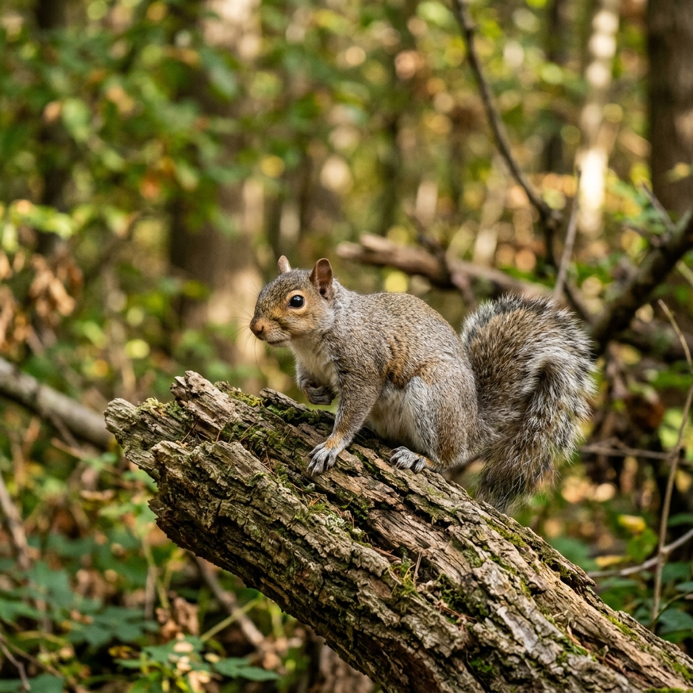
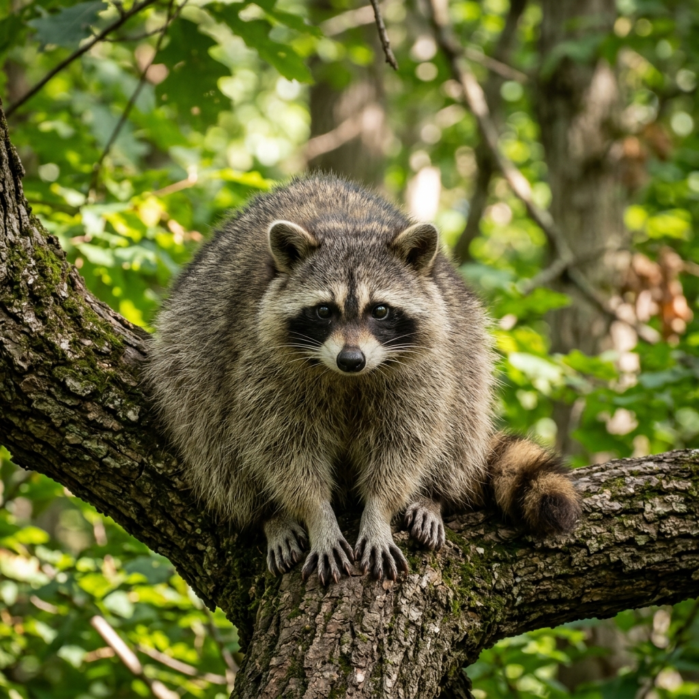

Here are some common, native mammals and wild animals found in Montclair, NJ:

Extremely common throughout the local forests and suburban yards. They chatter loudly when alarmed.

A nocturnal mammal easily identified by its black face mask and ringed tail. They make rapid clicking and chittering noises.
A common large mammal in local woodlands. When startled, they snort loudly and flash the white underside of their tail.
The only marsupial native to North America. They are nocturnal omnivores and will play dead when threatened.
A large ground squirrel that builds extensive burrow systems. Commonly seen feeding in grassy clearings.